Three concurrent healthcare projects under NUS's Dept. of Information Systems & Analytics — each covering the full lifecycle from research and accessibility decisions to high-fidelity prototypes across mobile and tablet.
A brain-health assessment platform. Users complete a structured evaluation, then track their brain-health over time with clear insights. I covered research, the assessment framework, and the tracking dashboard.
My scope
User research, the assessment framework & evaluation logic, and the tracking and insights experience — translated into high-fidelity screens.
Onboarding & login
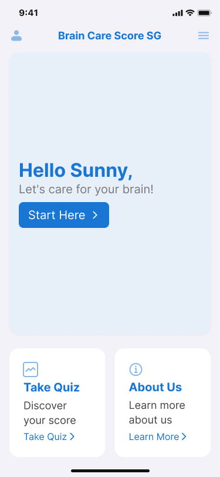
Welcome — large, friendly entry point
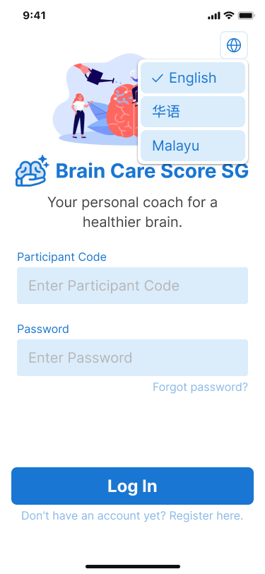
Sign in — oversized fields & buttons
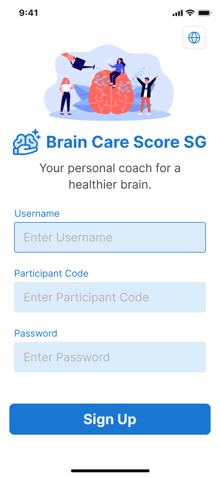
Account setup — minimal steps to start
Brain-health assessment
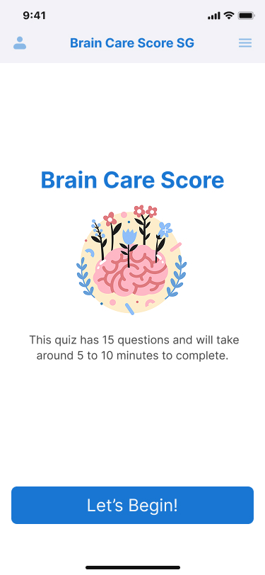
Question 01
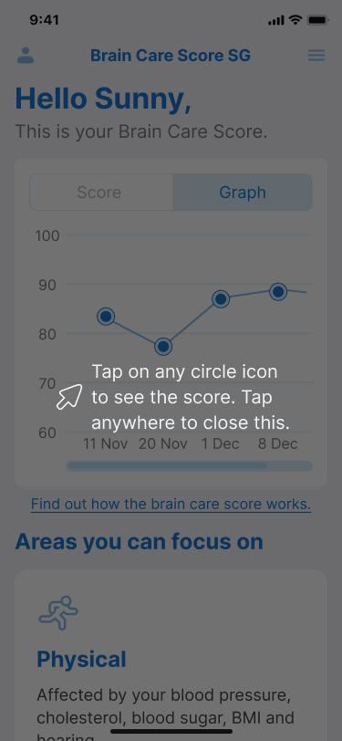
Question 02
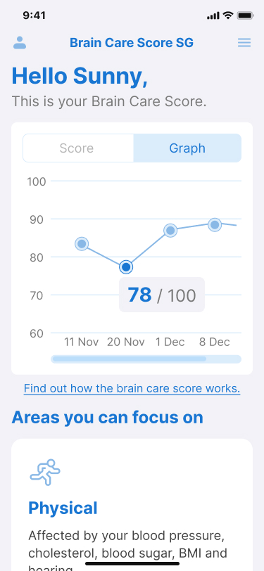
Question 03
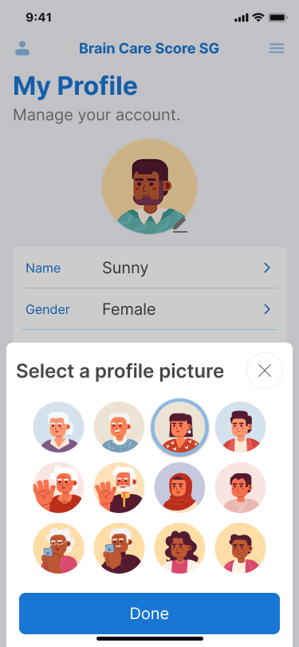
Question 04
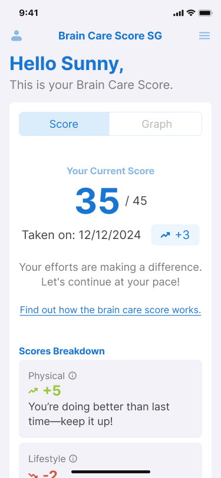
Question 05
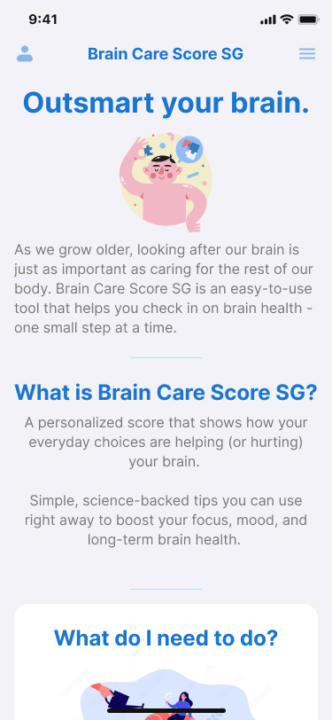
Question 06
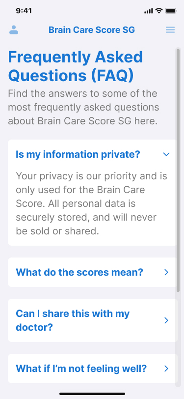
Question 07
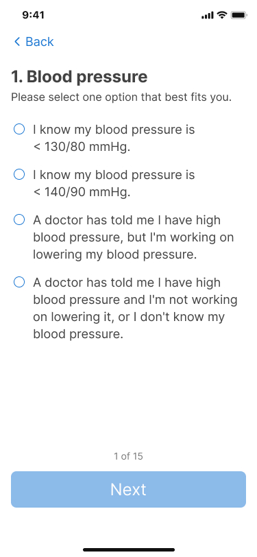
Question 08
Content & results
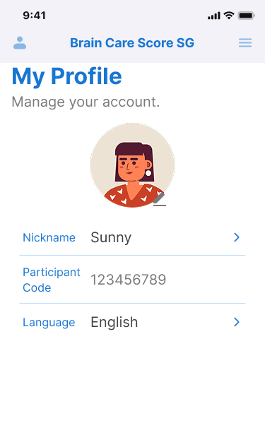
Results & content — clear, readable summary
Project 02 · Healthcare · NUS ISA
Engage
A self-assessment platform for elderly users. Accessibility led every decision — from typography to interaction. Three guided testing modules feed into a healthcare workflow that shares results with clinicians.
My scopeAccessibility-first UI, the three self-assessment modules, and the healthcare data-sharing workflow between users and doctors.
Accessibility-first principles
🔠
TypographyLarge, high-contrast type and generous spacing for ageing eyes.
👆
Touch targetsOversized, forgiving controls that reduce mis-taps and cognitive load.
♿
ConsistencyOne clear, predictable pattern applied across every screen.
Onboarding & login
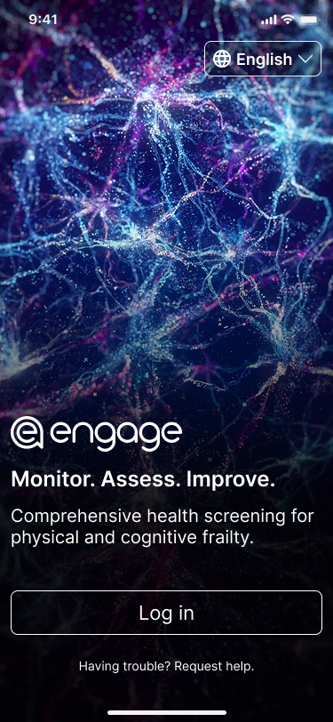
Sign in — simple, large entry
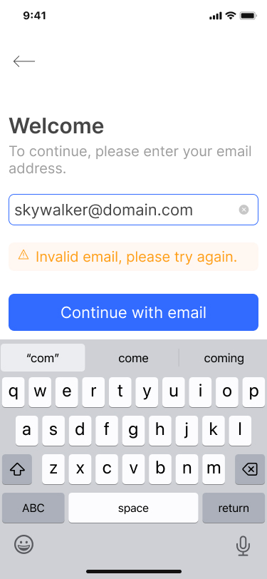
Sign in — confirmation step
Home & daily tasks
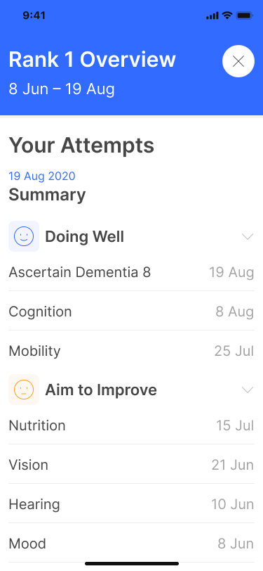
Home — landing & daily focus
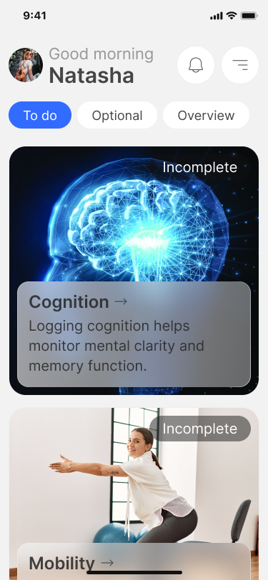
Tasks — clear, prioritised list
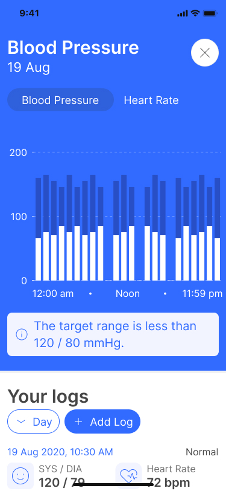
Progress — day view
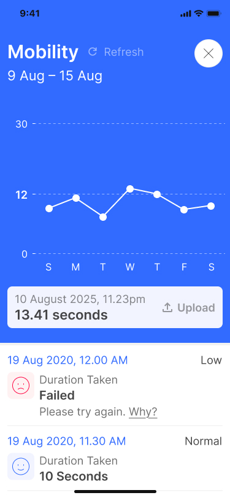
Progress — week view
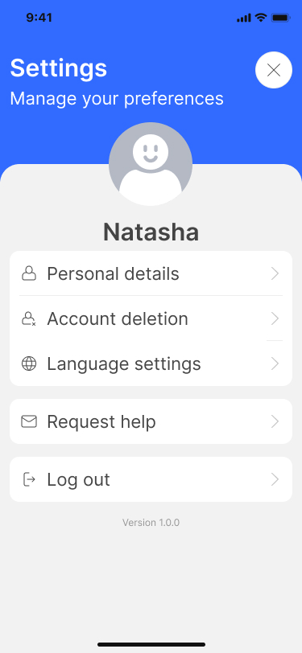
Settings — easy to read & adjust
Self-assessment modules
Module 01
Cognitive
Guided cognitive self-assessment.
Module 02
Memory
Short-term memory check.
Module 03
Sit-to-Stand
Mobility / physical test.
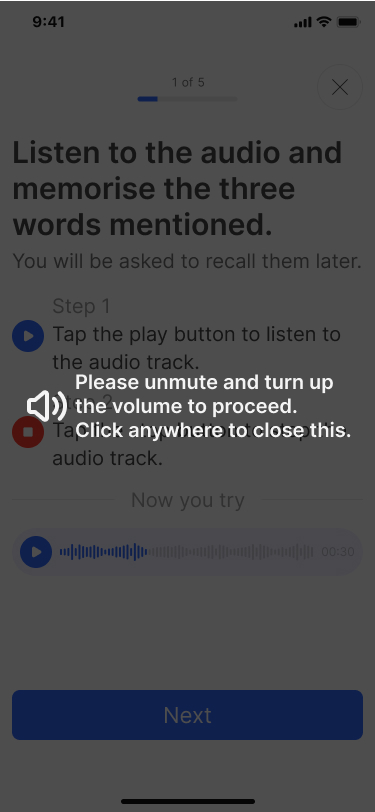
Cognitive — instructions
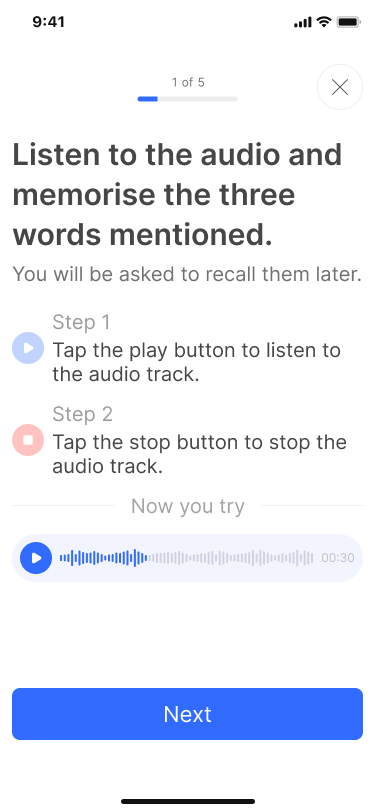
Cognitive — in progress
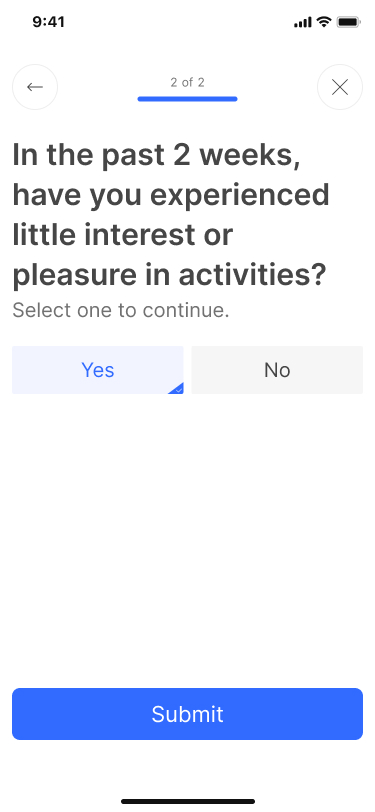
Memory — recall task
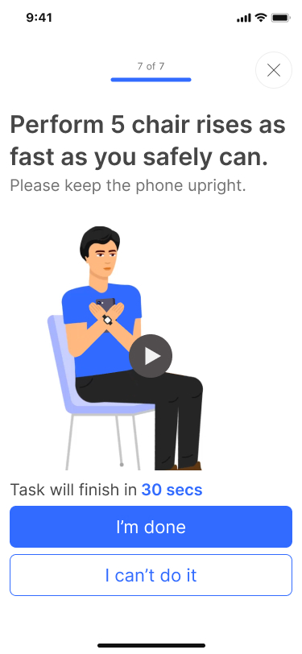
Sit-to-Stand — setup
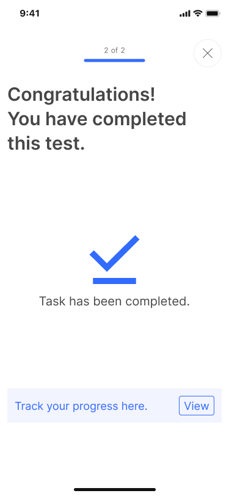
Sit-to-Stand — guidance
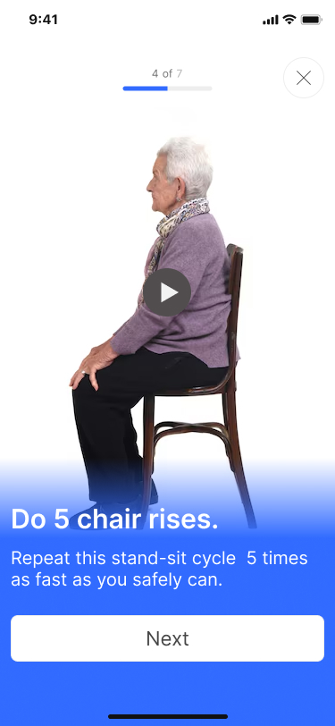
Sit-to-Stand — result
Project 03 · Healthcare · NUS ISA
Cognify
A tablet app for cognitive training through games. A small ecosystem of games keeps elderly users mentally active, with accessibility built in from the start — designed for the larger tablet screen.
My scope
The game ecosystem & information architecture, the user and caregiver-assisted flows, and accessibility considerations for elderly usability.